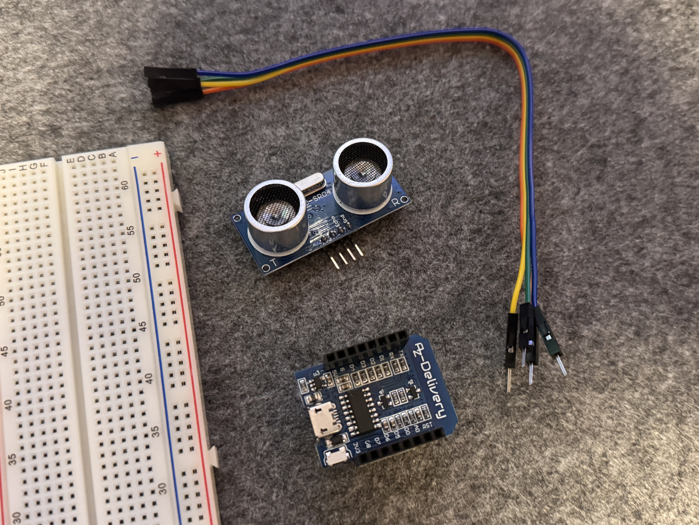
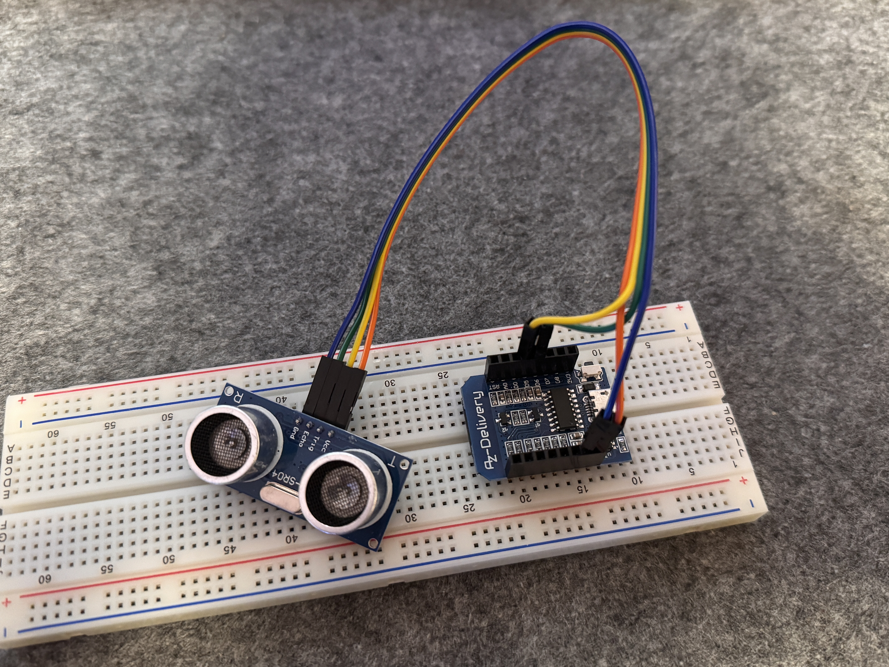

6. Ultrasonic Sensor
Measure Distance with HC-SR04 and ESP8266
The HC-SR04 uses sound to measure distance. It sends out a pulse and listens for the echo. Great for obstacle detection, smart trash bins, parking sensors, and more!
What You Need
- 1x ESP8266 D1 Mini
- 1x HC-SR04 ultrasonic sensor
- Wires + breadboard


Wiring the HC-SR04
Connect like this:
- VCC →
5Von D1 Mini - GND →
GND - TRIG →
D5(GPIO14) - ECHO →
D6(GPIO12)
Important: ECHO ger ut 5V signal – skydda din ESP8266 med en spänningsdelare (t.ex. 1kΩ + 2kΩ).
Example Code
This code sends a pulse, waits for the echo, and calculates distance using the speed of sound.
C++ HC-SR04 Example
#define TRIG_PIN D5
#define ECHO_PIN D6
void setup() {
Serial.begin(9600);
pinMode(TRIG_PIN, OUTPUT);
pinMode(ECHO_PIN, INPUT);
Serial.println("Ultrasonic sensor ready.");
}
void loop() {
digitalWrite(TRIG_PIN, LOW);
delayMicroseconds(2);
digitalWrite(TRIG_PIN, HIGH);
delayMicroseconds(10);
digitalWrite(TRIG_PIN, LOW);
long duration = pulseIn(ECHO_PIN, HIGH);
float distanceCM = duration * 0.034 / 2;
Serial.print("Distance: ");
Serial.print(distanceCM);
Serial.println(" cm");
delay(1000);
}What Does the Code Do?
Setup Section
-
#define TRIG_PIN D5: Definierar vilket ben som används för att skicka ut ljudsignalen. -
#define ECHO_PIN D6: Definierar vilket ben som ska ta emot ekot. -
Serial.begin(9600);: Startar seriell kommunikation så att vi kan se värden i Serial Monitor. -
pinMode(...): Sätter TRIG som utgång (output) och ECHO som ingång (input).
Loop Section
-
digitalWrite(TRIG_PIN, LOW);– Startar med att nollställa trig-signal -
delayMicroseconds(2);– Väntar 2 mikrosekunder (krävs enligt sensor-spec) -
digitalWrite(TRIG_PIN, HIGH);– Skickar ut ett ljudpuls -
delayMicroseconds(10);– Pulsens längd måste vara exakt 10 mikrosekunder -
pulseIn(ECHO_PIN, HIGH);– Mäter hur länge det tar innan ljudet studsar tillbaka (i mikrosekunder) -
float distanceCM = duration * 0.034 / 2;– Omvandlar tiden till avstånd i centimeter.
0.034 cm/μs är ljudets hastighet. Dela på 2 eftersom det är tur och retur. -
Serial.print(...)– Skriver ut avståndet i Serial Monitor
Du kan nu hålla handen framför sensorn och se avståndet ändras i realtid i Serial Monitor!
Using the Serial Monitor
- Upload the code to your D1 Mini
- Open Serial Monitor (Ctrl+Shift+M)
- Set baud rate to
9600
You will now see distance updates every second:
Distance: 18.5 cm
Distance: 19.2 cm
Distance: 19.1 cm